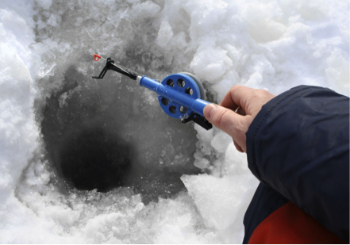
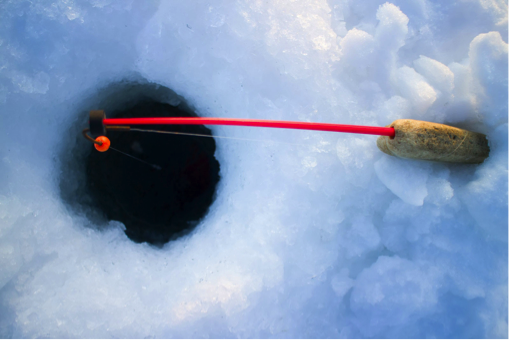
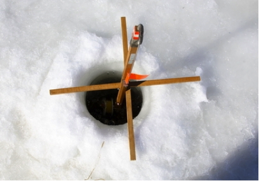

冰钓钓法
来源:渔获
发表时间：2016-03-23 12：31
分享到


冰钓与其他钓鱼方式有着很大的差异，要想玩好冰钓，必须认真学习，掌握冰钓技巧并灵活地运用，才能享受到冰钓带来的乐趣。
一、晃钓法
步骤：
- 放线，让钓钩沉至水底。
- 慢慢地将钓饵提起至离底部30公分左右。
- 你可以上下晃动，也可以左右或者向一边移动。
- 如果钓饵移动速度太快，鱼儿可能认为会白费力气而不去捕食。

二、观线法
另一种冰钓技巧是观线法，不用移动钓线，只需要静静地观察鱼线的移动轨迹。当鱼线突然收紧的时候，就是有东西咬钩了。可以在鱼线上增加一个浮漂，一旦有咬钩，浮漂就会有动静，以此来提醒钓鱼人。

三、静钓装置Tip-ups
Tip-up是一种冰钓装置。固定在冰洞口，上方竖一个旗标用来显示鱼线的动态。鱼咬钩后，末梢会翘起，给垂钓者信号。
多数钓鱼人会同时使用所有的钓法来看哪种技巧最合适特定的水质、鱼种和环境。

扫一扫分享